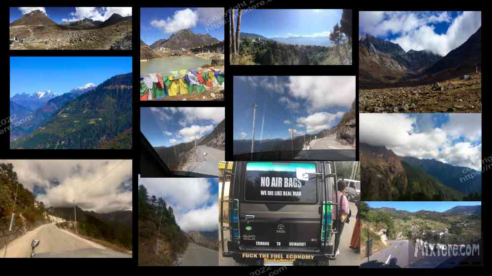
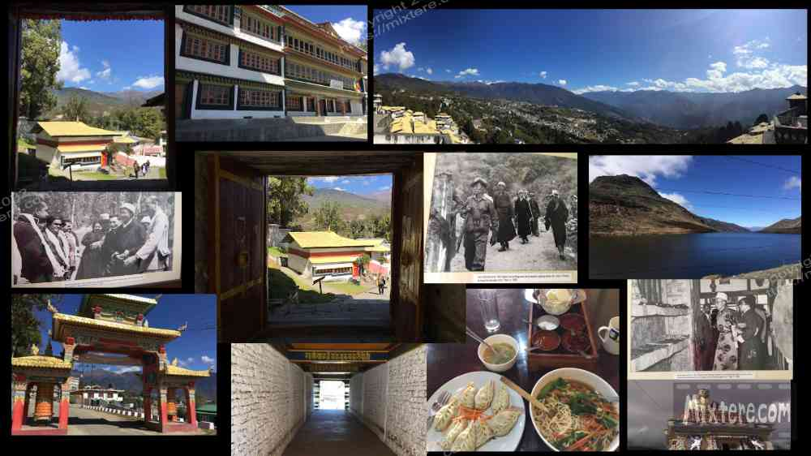
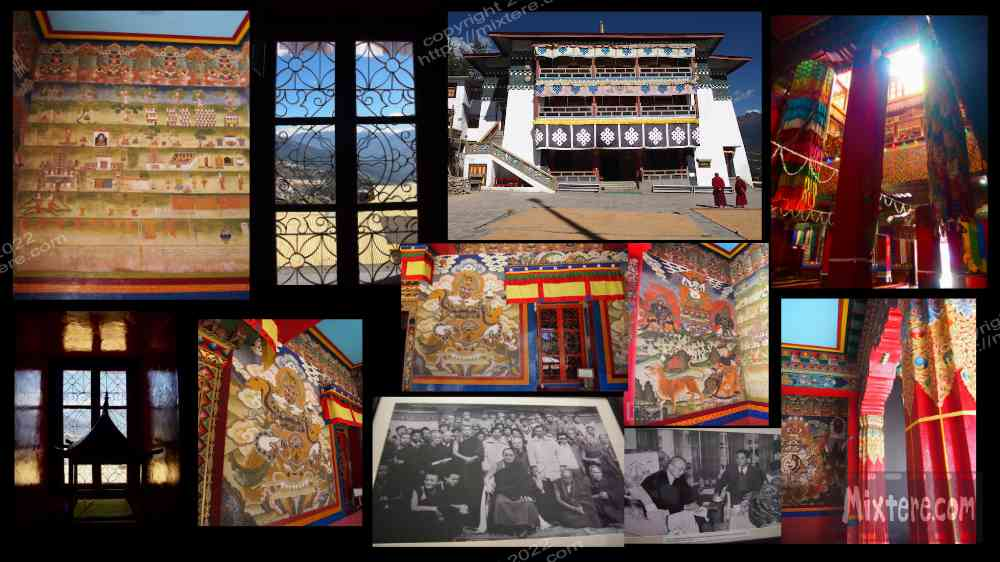

The journey overland to Tawang was hard-going but provided spectacular scenery. Cutting through the ultra-steep river valleys of Arunachal Pradesh is a sure way to one on the edge of one’s seat. As usual, the jeep rode with grunt and haste. It remained difficult to see with my head stuffed in the headliner but what I did see inspired awe. I attempted to capture some of the accent with my camera, featured on my youtube channel along with many of the other adventures documented here. For this see the "video" section of this website. The journey in the jeep continued to be a joint-stressing, hair-raising and sometimes nausea-inducing affair. Conditions continued to be medievally cramped. Having no other options I tried to let the hard-going contribute to the sense of adventure. This sense of adventure and discovery was heightened by my not being able to find out much about the area on the internet.
It took about 7 hours to get to Tawang from Bomdila. The most dramatic part of the drive was Sela pass, where we crossed at an elevation of about 1400 ft. This pass is spectacular and on many Indian motorcycle riders’ bucket lists. At that time of year (late fall) the pass was sprinkled with snow and cold. Powerfully ominous peaks lurked in the thin stillness. I had heard from an Indian that the area was regarded as a sort of “Bermuda Triangle” of the Himalayas. Sometimes radio and radar signals died and instruments failed. A military helicopter had gone down not too long ago. I was told that it and its occupants were never found.
While my co-passengers enjoyed some tea I found myself needing “a haircut” wicked-bad. I sought out a dilapidated shack plopped what looked to be a glacial moraine below the towering peaks and indoctrinated myself into a different sort of mile high club. I quickly exited the shack so as not to have the Sumo leave me behind. As I did this I was again struck by the dangerous majesty of the location. I found the rugged alpine environment amusingly juxtaposed with the pop images of fashionably but not functionally-dressed Indians sipping chai and shivering while taking selfies in the thin air. These amiable folk invited me in for a few shot.
Our jeep then skirted an alpine lake and followed the road as it meandered all the way down to the bottom of the river valley. There it was steamy and warm. We crossed a stream torrenting under the simple bridge. There some thick-furred monkeys were gathered along the water's edge. Seeing these animals in the wild, or even in the cities, was always a fascinating sight. Soon the jeep left this sub-tropical zone and ascended all the way back up to about 9 thousand feet to our destination. Tawang.
Physically drained and thankful that we had arrived in one piece, I took a moment to take in the surroundings. The scenery was spectacular. Through the next few days I hiked around town. Being a traveler on foot, it took a few days to adjust to altitude. After becoming accustomed to the warm temperatures of the plains I never did adjust to the cold in Tawang. I sampled a few simple restaurants, shopped a bit for warmer clothing and hiked up to the Big Buddha complex above town. I broke my “no meat” rule, a good rule to have while in India, and warmed up with some heartening chicken Thukpa and momos at the Dragon restaurant in town. The food was good and helped my body recover from all I was putting it through. For those that don’t know, thukpa is basically deluxe, spicy chicken soup featuring meat and or dumplings and sometimes noodles or rice with some vegetables in a sometimes spicy broth. What a wonder some proper fuel did for me after all the paltry meals in the last couple days.
I was surprised to see the plethora of whisky shops and liquor stores around the dusty lanes of Tawang. Bihar was not that far behind on my journey and there alcohol was officially banned. The occurrence of alcohol had been relatively unseen in the other states that I had visited, except on the veranda’s of the expensive hotels or village speakeasies that I did not visit. On a trip to Sikkim during the independent study period of my Buddhist Studies program so many years ago I had noticed that alcohol in the foothills of to the Himalayas was accepted. The Buddhist monks that I had interacted with imbibed in whisky and Thomba, the fermented millet beverage. This drink and the manner it is served is as close to “the amazing refillable beer” as I have ever seen. But it should be consumed with caution as the water to. make it is not likely boiled or safe for foreigners.
A few days before my arrival in Tawang I had booked a place called Donrub Homestay. It was clean but not exactly what it had been advertised as. Then electric air and water heater and flat screen tv were rendered useless most of the time due to unreliable electricity. My hosts said this was due to a number of construction projects. I was frustrated as it was cold and I had mistakenly left some warm clothes in the second airbnb in Guwahati. In addition to these inconveniences English was on short supply in Tawang so communicating with my hosts was difficult.
The main draw in Tawang is the magnificent monastery on the ridge above town. After a few days I felt robust enough to hike there. I walked along a narrow mountain road that rode up and down the mountain valleys through relatively rural land. Soon I came into a village of sorts. The road cut through a series of restaurants and guesthouses and then curved to accommodate the steep topography. As it flowed through the village development was growing increasingly dense. The village thinned out and after a couple more switchbacks the monastery came into view. A series of arches announced the entry onto the monastery complex. Beyond these the road stopped and a well-worn path led through a large covered archway, up a series of staircases and into a complex of buildings, monuments, stairways that spanned out along the mountain ridge. The lower area contained what looked to be residences and apartments for monks and other residents. The path then plateaued and ran flat along a series of large buildings that were plastered white on the exterior. A Tibetan architecture was evident in the buildings all around. I passed a large dining hall full of voices of what I think belonged to monks and continued on with the steady flow of other visitors. These were mostly Indian tourists in large groups.
A man from one of these groups stopped me to chat me up and to request a few photos. I sensed that he was sincere and I accepted. He was with his family and friends on an excursion from Calcutta. We exchanged some pleasantries and posed for a few clicks there on the mountain ridge. With that done we said our goodbyes and continued on our respective tours. The path led to what seemed to be a sort of courtyard where the monks had laid millet out to dry in the sun. I can only conclude that it was to be used to make thomba, the refillable beer/ millet wine that I referred to earlier. My goal was to avoid this beverage as consuming it had in the past led to giardia for me.
Around the drying millet was a museum and a large mediation hall. I explored both. The mediation hall was amazing. Inside it was beautifully designed and decorated. It was seasoned with years of smoke from burning incense and butter lamps, giving it a campfire smell. Due mostly to the blur of color and the intricacy in the decoration, “complex” is the word I would choose to describe the meditation hall. I would use the same word to describe Mahayana or Tibettan Buddhism. My experience of Tibetan Buddhism is that it is rich in complex ritual and brightly colored, extremely ornate visual presentations that also depict many Bon beliefs. Bon is the word for animist beliefs that preceded Buddhist influence in the area. The hall was dark and musty inside but all the color in the decoration brought the place a vibrance even in dim light. The place was pulsating with a quiet, foreboding aliveness. Much work had been done there; much contemplation, chanting, effort and discipline- likely for hundreds of years of more. All around was Tibetan imagery, such as the images and symbols found in the thankha paintings, mandala’s and often colorful garments and fabrics. In the hall were murals depicting tales of the course of a soul’s progress and various tributes to Padmasambhava (Guru Rinpoche). There were large tent-like columns of colored fabric, well-worn benches for meditation and Buddhist paraphernalia for events and rituals was all around. Much of it looked very old, well cared for and well-utilized.
My next stop was the museum, which in my mind didn’t really have much of a chance to live up to the mediation hall. But I found that it was more impressive than I had anticipated. Upon entering at the ground level I amusingly found the elderly monk asleep at his entry kiosk, snoozing into his ledger. He startled awake at my approach and calmly accepted what I think was 90 rupees for entry. I stepped up the stairs and was soon steeped in the rich history of the place. There were a lot of old weapons and armor, exotic as well as commonplace household items and religious articles that had survived the harsh climate for over 500 years of more. I was surprised to see so much war paraphernalia there. The clothing articles and religious costumes and armored outfits looked too old to still be intact. But battered and soiled and threadbare, they persevered in their protective cases. Perhaps the climate helped with this. I did not take too many pictures in the museum as, although it was allowed, the place felt too sacred for me to do this. Additionally, I was now past the honeymoon period of my journey and was documenting what I saw less and less. What I did shoot were a series of pictures of the young Dalai Lama successfully escaping Tibet after Chinese occupation in what I think was 1959.

The weapons and a tour group with a couple of westerners in tow motivated me to cut short my visit to the museum. I wasn’t moved to be around these things. I stepped out into the alpine sun and up a ladder to a platform that looked out on the valley. I snapped some photos and then sought some shade to rest and gander at the view. I saw what I thought was a good spot along a stone wall overlooking the opposite mountain valley. I started to step there and immediately stopped when I noticed that a large monkey had claimed that position. I felt guilty for disturbing his home environment and sought out another place. Soon hunger and exhaustion overtook me and I felt compelled to head back down into town to seek some water and food. Along with Pemayangtse monastery in Sikkim, the monastery at Tawang is the most impressive I have seen. One could hardly find a more dramatic or beautiful background for such a spot.
Back in Tawang I continued to get a sense of the place. There was a culture and attitude to the public around me that I had not experienced before in India. It ruffled me, feeling hard and gruff and in great contrast to the warmer mannerisms I had experienced in the plains of Assam or Bihar. This far north, nestled right up under Tibet what I was witnessing could possibly be attributed to tribal, Mongolian or Chinese influence. Whatever it was, what I observed was that the people were more aggressive, brutally direct- aloof even. I also noticed that women seemed pushed even more to the periphery of daily life and some of them seemed afraid of the men. There was also a hint of flashiness about how some of the people attired themselves. And it was palpable that my wandering foreign self was not especially welcome. It could be that I was experiencing the local pushback from a long, hard tourist season. But I think there was more to it than this.
What was welcome in Tawang was my money. This turned out to be a pressing issue as prices were high and these northern folk didn’t budge on their prices. Bargaining, practically an Indian pastime, was for me a futile endeavor here. Communication difficulty exacerbated the money issue. The English that was spoken was quite broken and Google translate did not have the local tribal languages available for reference. In short I had trouble adjusting to the social environment, which seemed to resemble the cold, thin air and the harsh landscapes of the mountains.
Another change I was experiencing in Tawang was a diminished feeling of safety. The place just felt darker, colder and more full of aggression, drunkenness and potential dangers than I anywhere I had been in India. I was told a number of times that guns are common in tribal areas due to tribal hunting rights. One local cited the need to defend against bears and such. On the winding switchbacks one could see guys riding motorcycles with large rifles strapped to their backs. On the lower foothills I had seen villagers walking around with large knives in their sheaths around their waist. These were startling observations. When you are traveling on your own all you really have is your intuition. It acts as a compass to help one make one's way. In Tawang, especially after 8pm, my compass was reading danger. I felt more exposed and vulnerable there.
On my last evening there, while walking back from a late dinner I found myself dodging dogs that were growling and darting around the street in the dim light of the taxi’s. There was whiskey-imbibing around the drivers and no one else on the streets. The dogs growled, the wind howled and I high tailed it to my room. It was a room I took because my hosts at Donrub Homestay had dropped the ball on getting the bus ticket promised, leaving me stranded. I had to stay another night and had chosen to leave the guest house and find a hotel close the bus depot. The place I found was cold, empty of guests and held a really spooky and ominous feeling. That night I lit a candle, said some prayers and tried the will morning to come. In the middle of the night I jolted awake when someone blasted their firearm right outside my window. What that was about I will never know. Early in then morning, as the jeep was being loaded, the proprietor of the hotel approached me asking for payment, which I had already provided. I was more than ready to leave Tawang.

Right-click below to open in new tab

Click below for next chapter